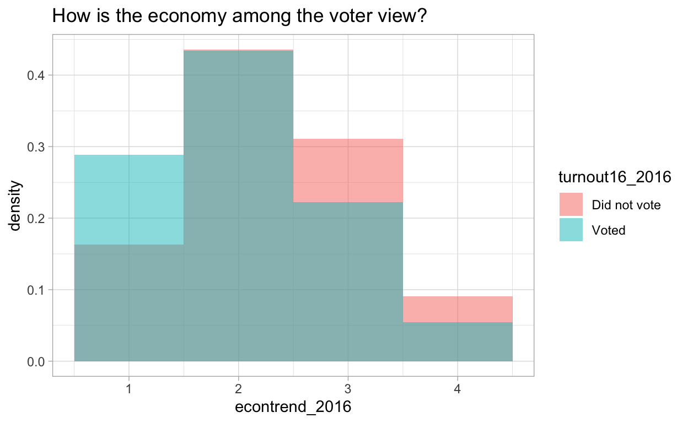

Introduction to Cross Validation
library(tidyverse)
library(gt)
theme_set(theme_light())
voters <- read_csv("https://raw.githubusercontent.com/juliasilge/supervised-ML-case-studies-course/master/data/voters.csv")Useful info
tribble(~Response, ~ Code,
"strongly agree", 1,
"agree", 2,
"disagree", 3,
"strongly disagree", 4) %>%
mutate(Response = str_to_title(Response)) %>%
gt() %>%
tab_style(
style = list(
cell_text(weight = "bold")),
locations = cells_column_labels(everything())
) %>%
opt_table_lines("default")| Response | Code |
|---|---|
| Strongly Agree | 1 |
| Agree | 2 |
| Disagree | 3 |
| Strongly Disagree | 4 |
voters %>%
glimpse()
Rows: 6,692
Columns: 43
$ case_identifier <dbl> 779, 2108, 2597, 4148, 4460, 5225, 590…
$ turnout16_2016 <chr> "Voted", "Voted", "Voted", "Voted", "V…
$ RIGGED_SYSTEM_1_2016 <dbl> 3, 2, 2, 1, 3, 3, 3, 2, 4, 2, 3, 3, 4,…
$ RIGGED_SYSTEM_2_2016 <dbl> 4, 1, 4, 4, 1, 3, 4, 3, 4, 3, 2, 2, 3,…
$ RIGGED_SYSTEM_3_2016 <dbl> 1, 3, 1, 1, 3, 2, 1, 3, 1, 1, 1, 4, 1,…
$ RIGGED_SYSTEM_4_2016 <dbl> 4, 1, 4, 4, 1, 2, 1, 2, 3, 2, 4, 1, 3,…
$ RIGGED_SYSTEM_5_2016 <dbl> 3, 3, 1, 2, 3, 2, 2, 1, 3, 2, 2, 2, 3,…
$ RIGGED_SYSTEM_6_2016 <dbl> 2, 2, 1, 1, 2, 3, 1, 2, 1, 2, 1, 1, 1,…
$ track_2016 <dbl> 2, 2, 1, 1, 2, 2, 1, 2, 2, 2, 1, 2, 2,…
$ persfinretro_2016 <dbl> 2, 3, 3, 1, 2, 2, 2, 3, 2, 1, 2, 3, 2,…
$ econtrend_2016 <dbl> 1, 3, 3, 1, 2, 2, 1, 3, 1, 1, 1, 3, 2,…
$ Americatrend_2016 <dbl> 1, 1, 1, 3, 3, 1, 2, 3, 2, 1, 3, 3, 2,…
$ futuretrend_2016 <dbl> 4, 1, 1, 3, 4, 3, 1, 3, 1, 1, 3, 1, 1,…
$ wealth_2016 <dbl> 2, 1, 2, 2, 1, 2, 2, 1, 2, 2, 2, 1, 2,…
$ values_culture_2016 <dbl> 2, 3, 3, 3, 3, 2, 3, 3, 1, 3, 3, 2, 1,…
$ US_respect_2016 <dbl> 2, 3, 1, 1, 2, 2, 2, 3, 3, 3, 3, 3, 3,…
$ trustgovt_2016 <dbl> 3, 3, 3, 3, 3, 2, 3, 3, 3, 3, 3, 3, 3,…
$ trust_people_2016 <dbl> 8, 2, 1, 1, 1, 2, 2, 1, 2, 1, 2, 1, 2,…
$ helpful_people_2016 <dbl> 1, 1, 2, 1, 1, 1, 2, 2, 1, 2, 2, 1, 1,…
$ fair_people_2016 <dbl> 8, 2, 1, 1, 1, 2, 2, 1, 2, 1, 1, 1, 2,…
$ imiss_a_2016 <dbl> 2, 1, 1, 1, 1, 2, 1, 1, 3, 1, 1, 1, 2,…
$ imiss_b_2016 <dbl> 2, 1, 1, 2, 1, 1, 1, 2, 1, 1, 1, 1, 2,…
$ imiss_c_2016 <dbl> 1, 2, 2, 3, 1, 2, 2, 1, 4, 2, 3, 1, 2,…
$ imiss_d_2016 <dbl> 1, 2, 1, 1, 1, 1, 1, 2, 1, 1, 1, 3, 2,…
$ imiss_e_2016 <dbl> 1, 1, 3, 1, 1, 3, 1, 2, 1, 1, 2, 2, 4,…
$ imiss_f_2016 <dbl> 2, 1, 1, 2, 1, 2, 1, 3, 2, 1, 1, 1, 2,…
$ imiss_g_2016 <dbl> 1, 4, 3, 3, 3, 1, 3, 4, 2, 2, 1, 4, 1,…
$ imiss_h_2016 <dbl> 1, 2, 2, 2, 1, 1, 1, 2, 1, 1, 1, 2, 1,…
$ imiss_i_2016 <dbl> 2, 2, 4, 4, 2, 1, 1, 3, 2, 1, 1, 2, 1,…
$ imiss_j_2016 <dbl> 1, 1, 1, 1, 1, 1, 1, 1, 1, 1, 1, 1, 1,…
$ imiss_k_2016 <dbl> 1, 2, 1, 1, 2, 1, 1, 4, 2, 1, 1, 3, 1,…
$ imiss_l_2016 <dbl> 1, 4, 1, 2, 4, 1, 1, 3, 1, 1, 1, 4, 2,…
$ imiss_m_2016 <dbl> 1, 2, 1, 2, 1, 1, 1, 1, 1, 1, 1, 2, 1,…
$ imiss_n_2016 <dbl> 1, 2, 1, 1, 1, 1, 1, 2, 2, 1, 1, 2, 2,…
$ imiss_o_2016 <dbl> 2, 1, 1, 1, 1, 2, 1, 2, 2, 1, 1, 2, 2,…
$ imiss_p_2016 <dbl> 2, 1, 2, 3, 1, 3, 1, 1, 4, 1, 1, 1, 2,…
$ imiss_q_2016 <dbl> 1, 1, 1, 2, 2, 1, 1, 4, 2, 1, 1, 3, 1,…
$ imiss_r_2016 <dbl> 2, 1, 1, 2, 1, 2, 1, 2, 4, 2, 2, 1, 3,…
$ imiss_s_2016 <dbl> 1, 2, 1, 2, 2, 1, 1, 1, 1, 1, 1, 3, 1,…
$ imiss_t_2016 <dbl> 1, 1, 3, 3, 1, 1, 3, 4, 1, 1, 1, 3, 1,…
$ imiss_u_2016 <dbl> 2, 2, 2, 2, 1, 3, 3, 1, 4, 2, 3, 2, 4,…
$ imiss_x_2016 <dbl> 1, 3, 1, 2, 1, 1, 1, 4, 1, 1, 1, 2, 1,…
$ imiss_y_2016 <dbl> 1, 4, 2, 3, 1, 1, 1, 3, 2, 1, 1, 3, 1,…
voters %>%
count(turnout16_2016)
# A tibble: 2 x 2
turnout16_2016 n
<chr> <int>
1 Did not vote 264
2 Voted 6428
voters %>%
group_by(turnout16_2016) %>%
summarise(`Elections don't matter` = mean(RIGGED_SYSTEM_1_2016 <= 2),
`Economy is getting better` = mean(econtrend_2016 == 1),
`Crime is very important` = mean(imiss_a_2016 == 2)) %>%
gt() %>%
tab_style(
style = list(
cell_text(weight = "bold")),
locations = cells_column_labels(everything())
) %>%
tab_options(
column_labels.border.top.color = "white",
column_labels.border.top.width = px(3),
column_labels.border.bottom.color = "black",
table_body.hlines.color = "white",
table.border.bottom.color = "white",
table.border.bottom.width = px(3)
) %>%
tab_spanner(
label = md("Survey questions"),
columns = 2:4) %>%
cols_label(
turnout16_2016 = "Turnout",
`Elections don't matter` = "Elections don't matter",
`Economy is getting better` = "Economy is getting better",
`Crime is very important` = "Crime is very important"
) %>%
fmt_percent(
columns = 2:4
)| Turnout | Survey questions | ||
|---|---|---|---|
| Elections don't matter | Economy is getting better | Crime is very important | |
| Did not vote | 55.30% | 16.29% | 29.17% |
| Voted | 34.05% | 28.87% | 34.23% |
voters %>%
ggplot(aes(econtrend_2016, after_stat(density), fill = turnout16_2016)) +
geom_histogram(alpha = 0.5, position = "identity", binwidth = 1) +
labs(title = "How is the economy among the voter view?")
voters_select <- voters %>%
mutate(turnout16_2016 = factor(turnout16_2016)) %>%
select(-case_identifier)
# loading tidymodels
library(tidymodels)
library(themis)
# split the data into training and testing sets
voters_split <- voters_select %>%
initial_split(prop = .8, stata = turnout16_2016)
voters_train <- training(voters_split)
voters_test <- testing(voters_split)We implement upsampling, we add more of the people who did not vote (just more of the same ones we already have) until the proportion is equal and the classes are balanced. ## Create cross-validation folds
vote_folds <- rsample::vfold_cv(voters_train, v = 10, repeats = 5)
voters_recipe <- recipe(turnout16_2016 ~ ., data = voters_train) %>%
step_upsample(turnout16_2016)
# specify a logistic model
glm_spec <- logistic_reg() %>%
set_engine("glm")
vote_wf <- workflow() %>%
add_recipe(voters_recipe) %>%
add_model(glm_spec)
set.seed(234)
glm_res <- vote_wf %>%
fit_resamples(
vote_folds,
metrics = metric_set(roc_auc, sens, spec),
control = control_resamples(save_pred = TRUE)
)
glimpse(glm_res)
Rows: 50
Columns: 6
$ splits <list> [<rsplit[4818 x 536 x 5354 x 42]>, <rsplit[48…
$ id <chr> "Repeat1", "Repeat1", "Repeat1", "Repeat1", "R…
$ id2 <chr> "Fold01", "Fold02", "Fold03", "Fold04", "Fold0…
$ .metrics <list> [<tbl_df[3 x 3]>, <tbl_df[3 x 3]>, <tbl_df[3 …
$ .notes <list> [<tbl_df[0 x 1]>, <tbl_df[0 x 1]>, <tbl_df[0 …
$ .predictions <list> [<tbl_df[536 x 5]>, <tbl_df[536 x 5]>, <tbl_d…
## specify a ranger model
rf_spec <- rand_forest() %>%
set_engine("ranger") %>%
set_mode("classification")
# Add the recipe + model to a workflow
vote_wf <- workflow() %>%
add_recipe(voters_recipe) %>%
add_model(rf_spec)
set.seed(234)
rf_res <- vote_wf %>%
fit_resamples(
vote_folds,
metrics = metric_set(roc_auc, sens, spec),
control = control_resamples(save_pred = TRUE))
glimpse(rf_res)
Rows: 50
Columns: 6
$ splits <list> [<rsplit[4818 x 536 x 5354 x 42]>, <rsplit[48…
$ id <chr> "Repeat1", "Repeat1", "Repeat1", "Repeat1", "R…
$ id2 <chr> "Fold01", "Fold02", "Fold03", "Fold04", "Fold0…
$ .metrics <list> [<tbl_df[3 x 3]>, <tbl_df[3 x 3]>, <tbl_df[3 …
$ .notes <list> [<tbl_df[0 x 1]>, <tbl_df[0 x 1]>, <tbl_df[0 …
$ .predictions <list> [<tbl_df[536 x 5]>, <tbl_df[536 x 5]>, <tbl_d…
collect_metrics(glm_res)
# A tibble: 3 x 5
.metric .estimator mean n std_err
<chr> <chr> <dbl> <int> <dbl>
1 roc_auc binary 0.719 50 0.00758
2 sens binary 0.640 50 0.0144
3 spec binary 0.700 50 0.00296
collect_metrics(rf_res)
# A tibble: 3 x 5
.metric .estimator mean n std_err
<chr> <chr> <dbl> <int> <dbl>
1 roc_auc binary 0.740 50 0.00729
2 sens binary 0 50 0
3 spec binary 1.00 50 0.0000833
## Final fit
vote_final <- vote_wf %>%
last_fit(voters_split)
## Confusion matrix
vote_final %>%
collect_predictions() %>%
conf_mat(turnout16_2016, .pred_class)
Truth
Prediction Did not vote Voted
Did not vote 0 1
Voted 49 1288